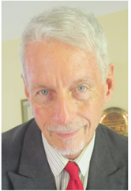

About Humanists TT
Affiliations
Humanists TT is a national chapter of Humanists International and an affiliate of the American Humanist Association. We provide a community for those seeking ethical living, critical thinking, and human rights advocacy without reliance on religion or supernatural beliefs.
Our Executive
- President: Novack George
- Secretary: John Gedeon 
- Treasurer: Ishwar Bissessar
Our Purpose
Trinidad & Tobago is a deeply religious society, but not everyone finds meaning or purpose through faith. We provide a space where humanists, skeptics, and those questioning religion can connect, discuss, and support each other without fear of judgment or exclusion. Our association exists for those who believe in critical thinking, scientific reasoning, and ethical living without reliance on religious doctrine. We would like to:
- Promote Humanist philosophy as a positive alternative to dogma
- Advocate for human rights, equality, and secular governance
- Provide support and community for individuals navigating a secular lifestyle
- Celebrate life events through ethical, secular ceremonies
- Encourage science, reason, and ethical problem-solving to address societal challenges
Our Vision
- National visibility and respect as an advisory body
- Promote evidence-based solutions to societal challenges
- Uphold human and civil rights, especially for minorities
- Offer community and fellowship for secular-minded individuals
- Advocate for character-building programs in schools
- Be recognized in the next Census under “Humanist”
Our Values
- All Humans are Kindred – rejecting “otherness”
- Science over Revelation – decisions based on reason and evidence
- Secular Governance – equal treatment under democratic rule
- People-Centred Ethics – humanity is responsible for progress
- Moral Reasoning – navigating ethical issues with compassion and logic
Our Reality
Despite our nation’s constitutional commitment to equality, non-religious people in Trinidad & Tobago often face social and institutional bias. Religion is embedded in policymaking, public institutions, and even everyday interactions, creating an environment where openly expressing secular or non-theistic beliefs can lead to stigma or exclusion. Remarkably, a blasphemy law from 1844 remains on the books in Trinidad & Tobago. The Humanists TT organisation exists to challenge this imbalance—not by opposing religion, but by advocating for a society where belief and non-belief are equally respected in law, policy, and social norms.
What's Next for Humanist TT?
Under new leadership, Humanists TT is expanding its efforts to advocate for greater secular representation in public discourse. This includes pushing for policy discussions that are guided by a clear preference for evidence-based reasoning rather than religious influence or dogma, addressing issues within education, reproductive rights, and equal representation under the Constitution of T&T. The executive team is also focused on broadening outreach, ensuring that young people and underrepresented groups within the secular community have a voice.
Join Us - A Community for the Questioning
If you are questioning faith, seeking a space for reasoned discussion, or simply looking for fellowship outside of religious institutions, we invite you to engage with us. Humanists TT stands for a future where everyone—regardless of belief—has an equal place in society.
- Visit our Contact Us Page
- Email: humaniststt.office@gmail.com